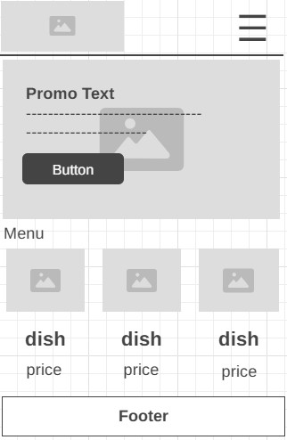
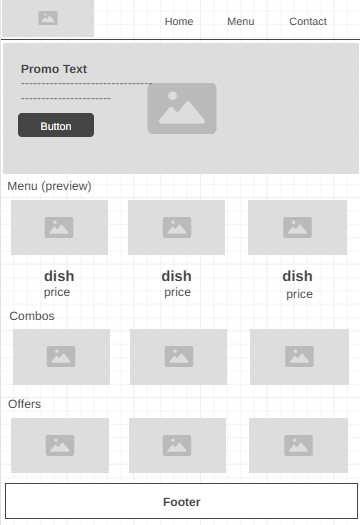

Site Name
Don Pollo Chicken & Grill
The site name is the same as the hypotetical restaurant chain "Don Pollo" and its location in Peru. Helpful with brand recognition for users.
Optional domain: donpollo . com
Site Purpose
The purpose of this website is to provide customers with information about Don Pollo, like the menu, location, opening hours, promotions, and contact. The site has the purpose to attract new customers and make the brand identity more strong.
Scenarios
- What food options and combos does Don Pollo offer in their page?
- Where is Don Pollo located and what are the opening hours?
Color Scheme
- Gunmetal (#404040): Used for main body text and the footer background
- Burnt Tangerine (#ED361A): Used for headings, highlights, and cta elements
- Orange (#FEA82F): Used for accents like icons and visual emphasis
- Ash gray (#9BC1BC): Used for secondary backgrounds and the wireframe section
- White (#FFFFFF): Used as the main page background and content cards
Typography
Poppins is used for all headings and important body text ABeeZee is used for regular body text
Wireframe
Mobile View

Desktop View
